Available in:
|
Xpress
|
Standard
|
Expert
|
Professional

|
Premium
|
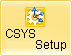
This orients the Machine Coordinate System to allow the part to be programmed from other orientations from World Coordinate System (WCS). This is typically used when a part needs to be programmed from more than one side for indexed 5 axis applications.
This dialog can be invoked by selecting Setup and CSYS Setup from Program tab under the Machining Browser.
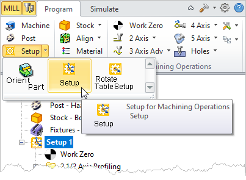 Machining Browser: Setup |
This dialog offers a convenient way of aligning the Machine Coordinate System (MCS).
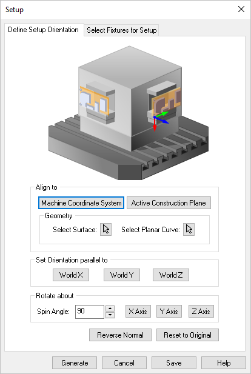 Dialog Box: Setup, Define Setup Orientation tab
The Machine Coordinate System (MCS) is displayed as a triad with Blue line representing the Z-axis, Red representing X-axis and Green representing the Y-axis. The WCS is displayed the same way as MCS with XYZ coordinates labeled on top of it.
|
This aligns the new MCS orientation. Select from the following:
Machine Tool Coordinate System
Aligns the Setup Coordinate System to Machine Tool Coordinate System.
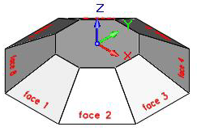 Align To: World Coordinate System Active View Construction Plane
Aligns the MCS to the orientation of the active viewport of the construction Plane.
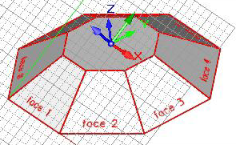 Align To: Active Construction Plane Geometry, Part Surface
Aligns the MCS to a point on a surface.
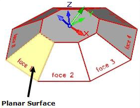 Align To: Geometery, Part Surface Geometry, Planar Curve
Aligns the MCS to a planar curve (2D sketch) to determine the alignment of MCS.
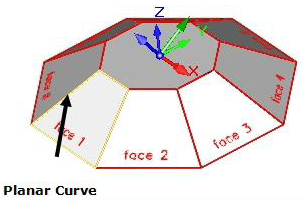 Align To: Geometry, Planar Curve |
Allows you to set the Machine Coordinate System parallel to the World X Y or Z co-ordinate axis. Select from the following:
World X
Orients the Z axis of MCS parallel to World X axis.
World Y
Orients the Z axis of MCS parallel to World Y axis.
World Z
Orients the Z axis of MCS parallel to World Z axis.
Orientation Parallel to
|
Triad Display Visibility
|
WCS OFF
MCS ON
|
WCS ON
MCS OFF
|
WCS ON
MCS ON
|
World X
|
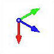
|
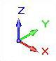
|
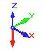
|
World Y
|
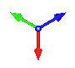
|

|
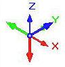
|
World Z
|
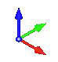
|
|
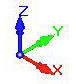
|
|
Allows you to rotate the Machine Coordinate System in X Y Z coordinate axis by any angle specified under Spin Angle. Specify Spin Angle and click the axis to rotate about. Clicking the same coordinate axis button multiple times rotates by the specified angle incrementally. For example if you set the Spin Angle = 90 and click X Axis button 2 times, the MCS is rotated about X coordinate axis by 180 degrees.
|
If you pick the Reverse Normal button the Z axis of the selected CSYS Setup will reverse, rotating 180 degrees about the positive X axis. Pick Reset to Original to undo any changes and revert the dialog back to the conditions when it was displayed.
|
Click OK and a new Setup is created and displayed under Machining Browser. By default Setup 1 is created when a new part is loaded.
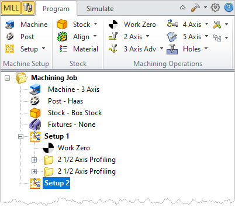 Pick OK and the New Setup is added to the Machining Job |
|
This dialog allows you to assign Fixture definitions to a setup.
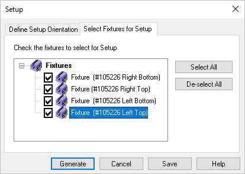 Setup, Select Fixtures for Setup tab Use this tab to select the Fixtures to be applied to this setup. Gouge checking will only apply to the fixtures checked in this dialog. You can use the Select All and Deselect All buttons to assist with your selection.
See Fixture Geometry for information about defining fixture for your part.
 Understand that editing a Fixture after it is assigned to a Setup will flag all existing operations in that setup for regeneration. Understand that editing a Fixture after it is assigned to a Setup will flag all existing operations in that setup for regeneration.
|
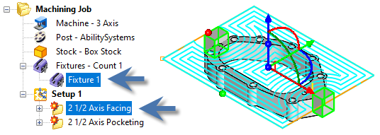
|
|
 CSYS Setups cannot be edited in Xpress, Standard and Expert configurations. CSYS Setups cannot be edited in Xpress, Standard and Expert configurations.
Selecting Setup edits the current or default Setup in Professional and Premium configurations.
Multiple Setups can be created in Professional and Premium configurations.
|
|